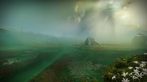

What is Garden of Salvation?

The name doesn't give any hints, but "Garden of Salvation" is what's called a "raid" within one of my current favorite video games: Destiny 2.
A raid is a 6-person activity that requires teamwork and communication to solve puzzles, defeat bosses, or both, usually within a certain time.
Completeing a raid earns the fireteam, the name given to the 6-person group, unique rewards or armour to further improve and/or customize their character.
On this webpage, you can expect to find a full breakdown of the raid, including the basics of the raid, such as mechanics features within the activity, and the
advanced items, the raid's challeneges, triumphs, and how to coplete them.
How Difficult is this Raid?
Compared to other raids, Garden of Salvation (GoS) is regarded within the top three most difficult raids within the game of Destiny 2.
Not only does it require a signifcant amount of team communication, but initial development of this raid led to Bungie pushing the limits with raid mechanics.
Each encounter requires at least two people in multiple groups to interact with the area environment to continue to survive the "Garden."
Though the raid sports an the usual average of 4 encounters, it's "in-between encounter" sections, weapon pools, and overall hectic nature of this activity makes it a less than favored option for most players.
However, surpasing these challenegs and becoming "Enlightened" makes the raid's challeneging nature all the more enticing to completionist players.
Why Should I Play it?
GoS has amazing guns to grind and earn through replaying the raid multiple times.
In the past, it was very hard to grind for these weapons, as non-featured activites would only be able to be played once per character.
However, Bungie introduced the weekly "Raid Rotator" which allows players to replay the featured raid to their hearts content, opening each encounter's completion chest over and over again.
Plus, though not confirmed, rumblings within the Destiny community suggest Bungie is about to remaster this activity, updating its armor and weapons to more modern perks and allow for these guns to be crafted.
"Crafted" weapons were an ediiton back in 2022, with the release of Destiny 2: The Witch Queen expansion.
Per the communities requests, these craftable weapons have slowly begun to replace old favorites, but now with newer perks and the ability to customize to your specific preference.
Destiny 2 is a fantastic video game experience, yet hard to describe in just a few paragraphs.
This looter-shooter style game has both PvE and PvP environments, as well as a phenomenal story from the same company that provided the world with the intial Halo Trilogy.
Below is the link to Bungie's Destiny 2 home page. if you enjoy games that require you to "grind" for upgrades, while also engaging within an expertly crafted storyline, give Destiny a try!
Good luck Gaurdian.
Check Out Destiny 2!